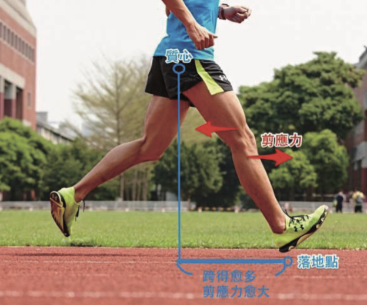
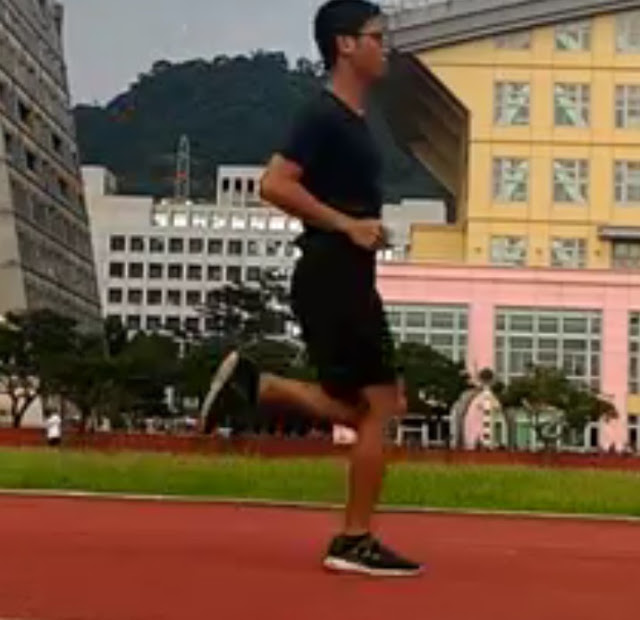
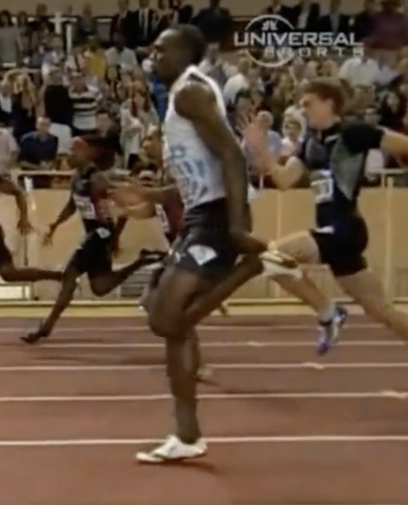
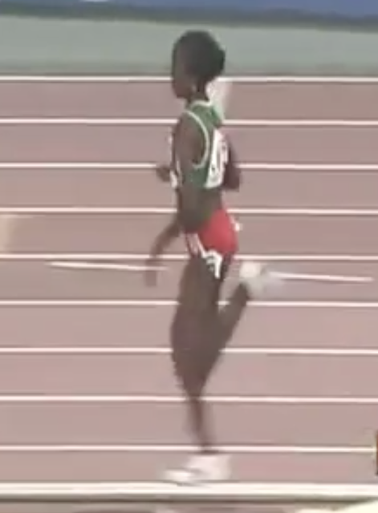

論文不能盡信
之前有朋友在臉書上貼上這篇文章說想請問我的個人的看法，一直在思考該怎麼回覆比較好，因為我不太喜歡批評特定的人，但這種文章實在太誤導人了，讓我不得不寫。
此篇文章的標題是〈腳跟先著地真的會造成傷害嗎？〉(Is It Harmful To Heel Strike When Running?)，作者雖然沒有「講明了」但可以看得出他最後的結論認為腳跟先著地是適合大多數跑者的，他最後一句寫道：「既然 95%的跑者都自發性地選擇腳跟先著地，所以這種著地方式不會是錯的。」(原文：The ninety-five percent of runners who naturally select a heel-first strike pattern can’t all be wrong.)
首先，最後一句話的推論方式有很大的問題：不能以有多少人這麼做，就認為這麼做是不會錯的。那就像 13 世紀到 17 世紀的「天動說」（Geocentric model，中文又稱「地心說」）一樣，大部分的人類都相信地球是宇宙的中心，因為日、月、星辰都繞著地球轉動，但我們都知道由這個「現象」所推導出的結論是錯的。
所以，不能只從多少人相信這件事(或多少人做這件事)的「現象」來當作論證的判準。
第二個常見的錯誤論證是：文中提到「過去三十年來，我注意到全足先著地的休閒跑者想改成前足先著地，所以造成腳掌內側和腳踝受傷，還有足底筋膜炎和跟腱炎；某些高足弓的人如果刻意做這件事，更會造成扭傷和蹠骨的疲勞性骨折。所以用腳掌的不同部位著地只是改變吸收落地衝擊的部位，而受傷的部位也不同。」(原文：Over the past 30 years, I’ve noticed that flat-footed recreational runners who attempt to transition to forefoot strike patterns tend to get inner foot and ankle injuries such as plantar fasciitis and Achilles tendinitis, while high-arched runners attempting to transition to a more forward contact point frequently suffer sprained ankles and metatarsal stress fractures.The reason that runners with heel versus mid/forefoot strike patterns get different injuries is because they absorb force in different areas.)
接著文中再論述到：「既然三種著地方式都會受傷，當然要挑比較有效率的方式，而研究顯示，當速度在 4 分 40 秒/公里左右時，腳跟先著地會比前足先著地省力 6%，只有當配速來到 4 分速時腳跟先著地與中足先著地之間的經濟性才會差不多。這些研究顯示：技巧高超的跑者才可以在中足或前足先著地時有較高的效率，但大部分的業餘跑者都是以腳跟先著地的效率較高。」(原文：In a computer simulated study evaluating efficiency, researchers from the University of Massachusetts showed that while running at 7:36 per mile pace, heel striking was approximately 6 percent more efficient than mid or forefoot striking (8). Some recent research suggests that the 6:25 per mile pace is the transition point at which there is no difference in economy between heel and midfoot strike patterns (9). These studies confirm that although highly skilled runners are efficient while landing on their mid or forefeet, the majority of recreational runners are more efficient with a heel-first strike pattern.)
—
這樣的論述只會一再地誤導跑者和其他對跑步有興趣的教練和研究者。
理由如下：跑者之所以會受傷最主要的原因是「過度跨步」，也就是腳掌在落地時跑到臀部的前方，使腿部形成「剪應力」(Shear Stress)，見附圖。

圖：譽寅刻意示範跑者常見的錯誤跑姿，把腳往前跨
在過度跨步時，不管是腳跟、全足還是前腳掌先著地，都會造成受傷，(如文中所說)只是受傷的部位會不同而已。但文中的論證方法是：「研究顯示，當速度在 4 分 40 秒/公里左右時，腳跟先著地會比前足先著地省力 6%」，如果研究中的受試跑者的著地點一樣跑到臀部的前方去了，前足先著地當然比較沒效率，因為這是刻意主動著地，支撐點還要等臀部往前轉移，所以小腿、腳掌支撐體重的時間也會延長，當然比較耗力。這就是我為什麼說這樣的研究會誤導人的理由所在。

圖：譽寅的標準跑姿
想要跑步不受傷，重點是：腳掌在落地時要盡量拉近在臀部正下方(如上圖)。落地點，離臀部愈遠，愈容易受傷，跟哪個地方先著地沒有絕對關係(這也是姿勢跑法的主要論點)。

上面為百米跑者，下面為 10 公里跑者，不管距離長短，「支撐必須在臀部正下方才能開始加速」這都是跑者必須遵循的物理原則：

既然姿勢跑法不強調哪邊先著地，那為什麼羅曼諾夫博士還要在書中說是「前足著地」呢？因為它是做對事情後自然發生的結果。只要站起來「原地跑」馬上就可以體會到，請站起來，試著原地跑 30 秒。請問剛才原地跑時，腳掌是哪邊先著地呢？你是否很自然地以前腳掌先著地，而且腳踝放鬆，前足觸地後腳跟接著下降輕觸地面。如果現在再原地跑一次，我要你在原地跑時刻意改成「全腳掌著地」（也就是前足和腳跟一起著地），覺得很怪是吧；若改成「腳跟先著地」就會覺得更怪。
論證的邏輯如下：
1、想要跑步不受傷，腳掌應該落在（接近）臀部正下方
2、原地跑時，腳掌一定只能落在臀部正下方
3、只要腳掌落在臀部正下方，腳掌就會「自然地」以前足先著地，腳踝放鬆（沒有踮腳）、腳跟自然下垂後輕觸地面
4、前足先著地只是腳掌落在臀部下方的結果，並非刻意追求的著地方式。
5、自然的跑姿應該是「像原地跑一樣向前跑」。
不論是入門跑者、百馬跑者還是奧運等級的菁英跑者，都必須在各種速度下「像原地跑一樣」腳掌自然以前足先著地，腳踝放鬆，腳跟自然下降，而且腳掌的所有動作都在臀部正下方完成，沒有大範圍的前後擺盪動作。但速度愈快，愈難做到。這我們都知道，可是我們必須先知道什麼是「真正的自然跑法」（而不是人腦自己想出來的），才能有一個追求的目標，那個目標就是，不管跑什麼速度，都要像原地跑一樣向前跑。
—
所有的結論(理論)的成形都是透過下面的步驟：
1、觀察
2、思想
3、觀念
4、理論
觀察是第一步，但不能只停留在第一步。因為很多時候「表象」是會誤導人的。我知道此文的作者不是故意的，很多論文的作者也不是故意的，就像發明「天動說」的托勒密（Claudius Ptolemy）也不是故意的一樣。但他的論證只停留在看得到的表象，像是只看到 95%的業餘跑者都是腳跟先著地、腳跟/中足/前足的受傷比例一樣、4 分速以上腳跟先著地比較有效率這些表象的數據上就下結論。
論證時，不能只是從「觀察現象」來推論，而必須從本質性的問題來思考，以這篇文章的題目來說就是提了一個表象的問題：〈腳跟先著地真的會造成傷害嗎？〉
本質性的問題應該是：〈為何跑者會受傷？〉，或者換另一種問法「受傷的根本原因是什麼？」，必須去追問原因。
從本質性的問題往外擴展才能去找到本質性的答案。不然就會像文章中的其中一段，下了一個荒謬的結論「經過這個研究，因為大部分的跑者都覺得後腳跟著地舒服很多，儘管讓他們穿上極簡薄底鞋也依然用腳跟先著地來跑，因為這種跑法實在太舒服了，無法放棄。」(原文 it’s not surprising that when asked to rate comfort between heel and midfoot strike patterns, recreational runners state that a rearfoot strike pattern is significantly more comfortable (10). Improved efficiency also explains why approximately 35 percent of runners transitioning into minimalist footwear continue to strike the ground with their heels despite the amplified impact forces: heel striking is too efficient to give up)
只從主觀的舒不舒服來引導出結論的論證方式，實在可怕。那就像是駝背的人說我覺得彎腰跑比較舒服，無法放棄……所以如果絕大多數的人都這樣說，它就不會錯嗎？
—
這篇文章的作者湯馬斯(Thomas Michaud)在 2013 年出了一本”Injury-Free Running”的書，副書名是”How to Build Strength, Improve Form, and Treat/Prevent Injuries”，從這篇文章以及這本書的副書名和亞馬遜的書本簡介中只看到他認為要透過「肌力」、「柔軟度」、「協調性」的訓練來避免受傷，完全沒有提到技巧。
這篇短文的最後列出參考文獻 11 篇，看似極為科學的背後，其實極不科學，因為科學的基礎在邏輯。他只是引用文獻，並沒有經過深入地思考就直接下結論，這是很可怕的。
作者簡介裡也強調他有治療跑者運動傷害的經驗長達三十年，這是很令人敬佩的經歷，我們也絕對相信他有「治療運動傷害」的學問和能力，但「避免運動傷害」方面的知識，看來還相當 ignorant，對於一個有影響力的醫生，他的影響的確會十分深遠。